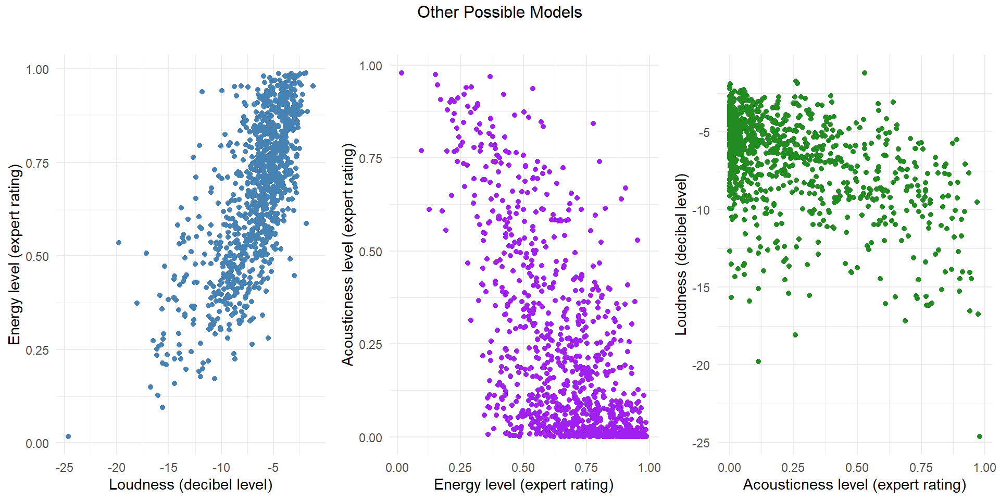
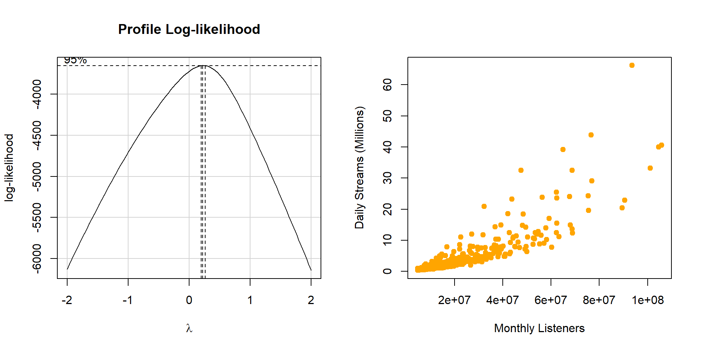
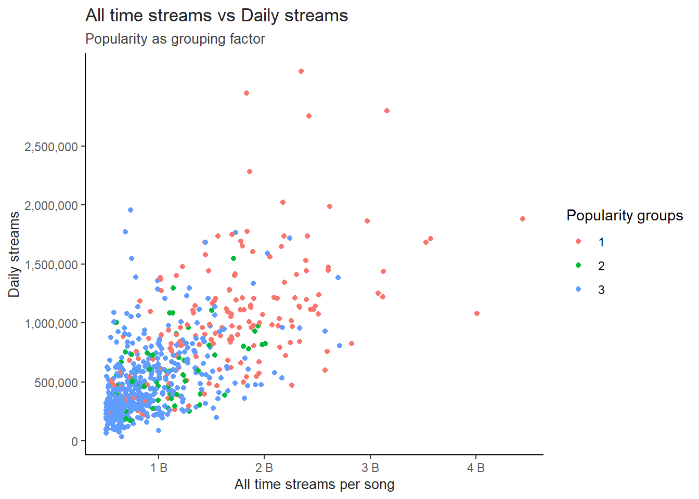
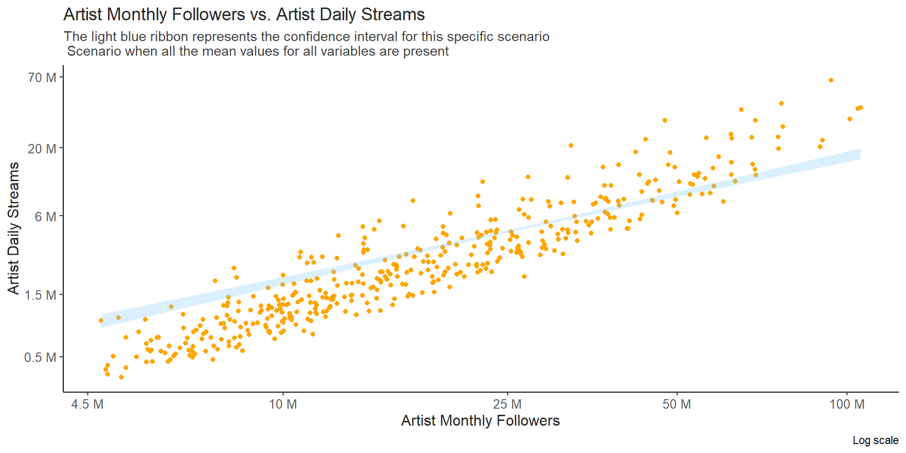
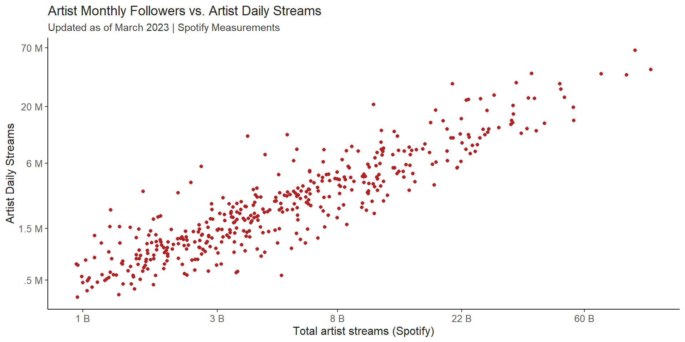

Spotify Regression
Tonatiuh De Leon
Sys.setenv(SPOTIFY_CLIENT_ID = '857bab10601a4bc2af19d359336d3af7')
Sys.setenv(SPOTIFY_CLIENT_SECRET = 'f36a14960bc445fba551b36f3b65cd65')
url <- "https://kworb.net/spotify/songs.html"
url1 <- "https://kworb.net/spotify/artists.html"
url2 <- "https://kworb.net/spotify/listeners.html"
#access_token <- get_spotify_access_token()
#all_artists_info <- search_spotify("all", type = "artist")
webpage <- read_html(url)
table <- html_table(webpage)[[1]]
webpage1 <- read_html(url1)
table1 <- html_table(webpage1)[[1]]
webpage2 <- read_html(url2)
table2 <- html_table(webpage2)[[1]]
df <- as.data.frame(table) |>
rename(title = `Artist and Title`) |>
separate(title, into = c("artist", "title"), sep = " - ") |>
rename(streams = Streams,
daily = Daily) |>
mutate(streams = as.numeric(gsub(",", "", streams)),
daily = as.numeric(gsub(",", "", daily))) |>
drop_na()
df1 <- as.data.frame(table1) |>
rename(artist_streams = Streams,
artist = Artist,
daily1 = Daily) |>
mutate(artist_streams = as.numeric(gsub(",", "", artist_streams))) |>
dplyr::select(artist, artist_streams, daily1) |>
drop_na()
df2 <- as.data.frame(table2) |>
rename(monthly_listeners = Listeners,
peak_monthly_listeners = PkListeners,
months_sincepk = Peak,
daily_average = `Daily Trend`,
artist = Artist) |>
mutate(monthly_listeners = as.numeric(gsub(",", "", monthly_listeners)),
peak_monthly_listeners = as.numeric(gsub(",", "", peak_monthly_listeners)),
daily_average = as.numeric(gsub(",", "", daily_average)))|>
dplyr::select(artist, monthly_listeners, peak_monthly_listeners, months_sincepk, daily_average) |>
drop_na()
dta <- read_csv("https://github.com/Tonadeleon/Regression-Projects/raw/main/Datasets/dataset.csv")|>
#filter(popularity > 20) |>
rename(title = track_name,
artist = artists,
title_id = track_id,
album = album_name,
loud = loudness,
words = speechiness,
acoustics = acousticness,
instrumental = instrumentalness,
live = liveness) |>
inner_join(df1, by="artist", relationship =
"many-to-many") |>
inner_join(df2, by="artist", relationship =
"many-to-many")
dt <- inner_join(dta, df, by = c("title", "artist"), relationship =
"many-to-many") |>
dplyr::select(-track_genre) |>
mutate(explicit = as.factor(explicit),
daily = daily,
#streams = ifelse(streams>3825666400, 942193161, streams),
#times = as.factor(time_signature),
#energy = ifelse(energy>.5,1,0),
#duration = ifelse(between(duration_ms, 200000, 250000), 1, 0),
#loud = ifelse(loud>-9, 1, 0),
dance = ifelse(danceability>.5,1,0),
words = ifelse(between(words, .025, .06), 1, 0),
instrumental = ifelse(instrumental>0,1,0),
#popularity = ifelse(popularity>76,1,0),
live = ifelse(live<.37,1,0),
key = case_when(key %in% c(0, 1, 6, 8, 11) ~ 1,TRUE ~ 0),
explicit = case_when(explicit == "TRUE" ~ 1,TRUE ~ 0),
#genre = case_when(genre %in% c("pop", "chill", "indie", "garage", "ambient", "folk", "indie-pop", "power-pop", "reggae", "soul", "synth-pop", "swedish", "country", "metal", "german", "funk", "alternative", "alt-rock") ~ 1,TRUE ~ 0),
peak_last_year = ifelse(months_sincepk<13,1,0),
y = ifelse(popularity >79 ,1 ,0),
popularity0 = round(popularity / 5) * 5,
popularity0 = case_when( popularity0 > 84 ~ 1, popularity == 80 ~ 2, TRUE ~ 3 ),
popularity1 = round(popularity / 10) * 10,
popularity1 = case_when( popularity1 == 0 ~ 1, popularity1 == 70 ~ 2, popularity1 == 80 ~ 3, popularity1 == 90 ~ 4, TRUE ~ 5 ),
times = case_when(time_signature %in% c(4) ~ 1,TRUE ~ 0),
energy = round(energy*10),
popular_artist = case_when(artist_streams > 75000 ~ 1, between(artist_streams, 50000,75000) ~ 2, between(artist_streams, 25000,50000) ~ 3, artist_streams < 25000 ~ 4, TRUE ~ 0 ),
diff = peak_monthly_listeners - monthly_listeners,
current_hit = ifelse(diff>20000000,1,0),
current_trend = ifelse(daily_average<0,0,1)) |>
distinct(across(c(daily1, monthly_listeners, artist_streams, streams, months_sincepk, explicit, daily, popular_artist))) |>
dplyr::select(daily, daily1, monthly_listeners, artist_streams, streams, months_sincepk, explicit, popular_artist)
dt$daily1 <- log(dt$daily1)
dt$monthly_listeners <- log(dt$monthly_listeners)
dt$artist_streams <- log(dt$artist_streams)
dt$streams <- log(dt$streams)
dt$daily <- log(dt$daily)
mylm <- lm((daily1) ~
explicit +
###
(monthly_listeners) +
(artist_streams) +
(streams)
, dt)
b <-(coef(mylm))
#summary(mylm)Introduction
Actual Model Representation
ggplot(dt, aes(y=(daily1), x=(monthly_listeners)))+
geom_point(show.legend = F, col="orange")+
#geom_smooth( col="skyblue", method = "lm", formula = "(y)~(x)")+
annotate("text", x = log(50000000-5000000), y = log(.75),
label = "Subset being measured:", color = "grey35", hjust = -0.1, size=3.2) +
stat_function(fun = function(x)
(b[1] + b[2] * 0 + b[4] * 8.156 + b[5] * 20.17) +
(b[3]) * x, linewidth = 1, col = "skyblue1") +
annotate("text", x = log(50000000-1000000), y = log(.38),
label = "2nd Quartile", color = "skyblue1", hjust = -0.1, size=3.2) +
stat_function(fun = function(x)
(b[1] + b[2] * 0 + b[4] * 9.030 + b[5] * 20.55) +
(b[3]) * x, linewidth = 1, col = "skyblue3") +
annotate("text", x = log(50000000-500000), y = log(.48),
label = "Median", color = "skyblue3", hjust = -0.1, size=3.2) +
stat_function(fun = function(x)
(b[1] + b[2] * 0 + b[4] * 9.916 + b[5] * 20.86) +
(b[3]) * x, linewidth = 1, col = "steelblue4") +
annotate("text", x = log(50000000-1000000), y = log(.6),
label = "3rd Quartile", color = "steelblue4", hjust = -0.1, size=3.2) +
scale_x_continuous(breaks = c(log(4500000), log(10000000), log(25000000), log(50000000), log(100000000)),
labels = c("4.5 M", "10 M", "25 M", "50 M" ,"100 M")) +
scale_y_continuous(breaks = c(log(.5), log(1.5), log(6), log(20), log(70)),
labels = c(".5 M", "1.5 M", "6 M", "20 M" ,"70 M")) +
theme_classic() +
labs(
title = "Artist Monthly Followers vs. Artist Daily Streams",
subtitle = "These lines represent a 2D version of the actual high dimensional model",
x= "Artist Monthly Followers",
y = "Artist Daily Streams",
caption= "Log scale") +
theme(
plot.title = element_text(size = 14, color = "grey15"),
axis.text.x = element_text(color = "grey35", size = 10),
axis.text.y = element_text(color = "grey35", size = 10),
plot.subtitle = element_text(color = "grey35", size = 11),
axis.title = element_text(color = "grey15", size = 12))
\[ \text{Regression Equation :} \\\ \\ \text{Artist Daily Streams}_{Y_i} = \\\ \ \text{b0} + \text{Monthly followers}_{b_1} + \text{Explicit (or not)}_{b_2} + \text{All time artist streams}_{b_3} + \\\ \ \text{All time streams per song}_{b_4} \]
You may be wondering why the least square lines of this model look as if they’re not fitting the data very well. Maybe I did a bad job graphing the model? or maybe the model is not that good? It was interesting to me at first. Considering that we’re used to the simple idea (see the other tab) that the line should be directly in the middle of the points; I was shocked when I realized that even when these lines look as if they’re not fitting the data well enough, they’re actually a correct representation of this model.
This is because this model has many dimensions to it. Differently from the simple idea where only two dimensions are considered, here we are looking at 3 and some subgroups that could make it 4 dimensional. Because of this, there is not a “one line fits all scenarios” case in this model, but actually there are infinite least squares lines according to different scenarios. A couple examples are shown in the graph above. The 3 least square lines shown in the graph portray subsets of the data where all time artist streams, and all time streams per song meet their respective quartiles as examples (see graph legend). In other words, what if my artist has “x” amount of followers, and “z” amount of all time streams, and has a song with “q” reproductions. Well there will certainly be a line for that type of artist and if many fall into that category we would be able to predict their daily streams.
This is a high dimensional regression. The actual model (1st graph) and their near to infinite possible scenarios could be overwhelming to understand, that’s why from this point on in this analysis, all details for any scenario being considered will be disclosed in the different tabs of the analysis.
This analysis will explain the relationship between artist monthly followers and their daily streams on Spotify, we could estimate their daily revenue as well; Spotify does not share all of its information publicly, (no revenue data) only some variables were available to perform a regression model on this data. This is why more research was needed in order to find variables. By looking up related Spotify data I came across with data that not only had information on how the song was made (duration, decibel levels, etc..), but it also had Monthly followers for more than 3000 artists as well as daily streamings, and other interesting variables which led me to continue an analysis on it.(See model selection tab)
If the correlation is proven true, then an artist can focus their efforts on getting more followers so their streams go up and thus their earnings.
Thus, this analysis will consider the next hypothesis:
\[ \left.\begin{array}{ll} H_0: \beta_1 = 0 \\ H_a: \beta_1 \neq 0 \end{array} \right\} \ \text{Slope Hypotheses} \\ \text{alpha level:} \ .05 \]
The null hypothesis being a slope of zero will help us test if the correlation is non existent. IF the slope of this model was zero, then no correlation would be found between these two variables. A T-test will be performed to test for a significant difference between zero and the actual slope of the model. If the results are significant at the alpha level of .05, Then it would be safe to assume that correlation has been found between these two variables and in the model as well.
Such hypothesis can be tested by using the slope coefficient of the model summary. However, it’s crucial to understand that even when there are almost infinite lines in this model, all of them share the same slope. So, for each specific scenario that we try to analyze there will be a single slope (as seen in the first graph). There’s only one slope when we test monthly followers as the main predictor because all of these lines are only shifting in their intercepts.
There would be different slopes if we tested a null hypothesis on the rest of the variables. Since, Monthly followers is the best predictor in this model, we will stick to it and test the null at the .05 alpha level.
To start the hypothesis testing, a corresponding T value is needed for the comparison between our selected line slope, and the slope that is being hypothesized which is of 0, meaning no correlation. After that, a P value for the slope in the model can be calculated while is tested against the null hypothesis. For this we will use the artist monthly followers slope.
tvalue <- ((b[3]) - 0)/(0.03272)
result <- data.frame(a = round(pt(-abs(tvalue), 876 ) * 2, 5), row.names = NULL)
kable(result, align = "c", col.names = 'P. Value when 0 streams increase per new monthly follower is the null ')| P. Value when 0 streams increase per new monthly follower is the null |
|---|
| 0 |
As we can see, there is a significant difference between the model’s estimated slope for this correlation and zero. It is then safe to assume that, it is reasonable to explain the amount of monthly streams per artist (which can lead to more earnings) by their monthly followers.
Spotify’s follower count increases their monthly streams. What I mean by this is that the slope of these lines actually mean streams per one follower gained in a month. So, in this case there is an increase of 3 streams per follower in a monthly basis. This slope is being tested to the 0 or no additional stream per new monthly follower, and the results indicate that the slope of the model is of significant value.
Keep on reading to see more on how the data was worked up in order to get to these results.
Simple Idea
ggplot(dt, aes(y=(daily1), x=(monthly_listeners)))+
geom_point(show.legend = F, col="orange")+
geom_smooth( col="skyblue", method = "lm", formula = "(y)~(x)") +
scale_x_continuous(breaks = c(log(4500000), log(10000000), log(25000000), log(50000000), log(100000000)), labels=c("4.5 M","10 M","25 M","50 M" ,"100 M")) +
scale_y_continuous(breaks = c(log(.5), log(1.5), log(6), log(20), log(70)), labels=c(".5 M","1.5 M","6 M","20 M" ,"70 M"))+
theme_classic() +
labs(
title = "Artist Monthly Followers vs. Artist Daily Streams",
subtitle = "March 2023, Spotify Measurements",
x= "Artist Monthly Followers",
y = "Artist Daily Streams",
caption= "Log scale") +
theme(
plot.title = element_text(size = 13, color = "grey30"),
axis.text.x = element_text(color = "grey45"),
axis.text.y = element_text(color = "grey45"),
plot.subtitle = element_text(color = "grey35", size = 10),
axis.title = element_text(color = "grey35", size = 10))
While this is not the actual model being used, it gives an idea of how the model would look like if it was 2D only, it also portrays how linear the data is and looks when transformed with log scales on x and y. However, a better prediction can be achieved when using the rest of the variables shown in the actual model.
Model Selection
Data Collection
I found many interesting data variables for Spotify, some of them I found in Kaggle and the rest I found in Kworb’s Project on the Spotify section. Here are the variables I was able to find that are available in Spotify, other than artist’s name, albums, and songs;
Kaggle:
key - if certain Keys were present in the song
loud - song’s decibel level
mode - major or minor scale
words - are there too many words in the song?
acoustics - level of acoustics
instrumental - level of instrumentality
live - crowd noises present
valence - level of joy
tempo - beats per minute
time_signature - 3/4, 4/4, etc..
track_genre - genre
Kworb’s Project:
daily - Monthly streams per song
daily1 - daily streams per artist
monthly_listeners - number of followers per artist
peak_monthly_listeners - max number of followers the artist had
months_sincepk - number of months since peak monthly listeners
daily_average - amount of followers the artist is getting or losing
More variables were included in the final data set, and after deep data analysis more were found. By pure logic we can infer that number of followers will be important, as well as number of streams. But to be sure about this, multiple pairs plot were used. Here are a couple of them.
Model Selection
Original Pairs Plot
Take a look to the following pairs plot to understand more about the process of selecting this final model. Consider which variables have a larger correlation; Since no monetary values were available, I looked for other types of correlation and tried to keep my model business/industry related. I looked for variables which were related in order to get good insights for spotify artists.
Originally, not many correlations were visible. A little on daily and monthly_listeners can be visible but, it’s not too obvious. But was enough to get me started on trying to find something there. At the same time, the relation between streams and daily looked good to me. This is why I tried both models. Take a look at my alternative model if you’re curious about it.
dto <- inner_join(dta, df, by = c("title", "artist"), relationship = "many-to-many") |>
mutate(explicit = as.factor(explicit),
track_genre = as.factor(track_genre)) |>
dplyr::select(daily, daily1, everything()) |>
dplyr::select(-c("...1", title_id, artist, album, title))
pairs(dto, panel=panel.smooth)
Wrangled Pairs Plot
After wrangling the data, and creating new variables such as current_trend, peaked_last_year and others in where I create some on-off switches, as well as multiple categorical variables I got many good insights as to what to do next. This pairs plot helped me view the correlation between daily1 and monthly_listeners and that got me my first raw R2 of around .7 Then I tried transforming the data.
dta1 <- read_csv("https://github.com/Tonadeleon/Regression-Projects/raw/main/Datasets/dataset.csv")|>
#filter(popularity > 59) |>
rename(title = track_name,
artist = artists,
title_id = track_id,
album = album_name,
loud = loudness,
words = speechiness,
acoustics = acousticness,
instrumental = instrumentalness,
live = liveness) |>
inner_join(df1, by="artist", relationship =
"many-to-many") |>
inner_join(df2, by="artist", relationship =
"many-to-many")
dtal <- inner_join(dta1, df, by = c("title", "artist"), relationship =
"many-to-many") |>
mutate(explicit = as.factor(explicit),
genre = as.factor(track_genre),
track_genre = as.factor(track_genre),
daily = daily,
#streams = ifelse(streams>3825666400, 942193161, streams),
#times = as.factor(time_signature),
#energy = ifelse(energy>.5,1,0),
#duration = ifelse(between(duration_ms, 200000, 250000), 1, 0),
#loud = ifelse(loud>-9, 1, 0),
dance = ifelse(danceability>.5,1,0),
words = ifelse(between(words, .025, .06), 1, 0),
instrumental = ifelse(instrumental>0,1,0),
#popularity = ifelse(popularity>76,1,0),
live = ifelse(live<.37,1,0),
key = case_when(key %in% c(0, 1, 6, 8, 11) ~ 1,TRUE ~ 0),
explicit = case_when(explicit == "TRUE" ~ 1,TRUE ~ 0),
genre = case_when(genre %in% c("pop", "chill", "indie", "garage", "ambient", "folk", "indie-pop", "power-pop", "reggae", "soul", "synth-pop", "swedish", "country", "metal", "german", "funk", "alternative", "alt-rock") ~ 1,TRUE ~ 0),
peak_last_year = ifelse(months_sincepk<13,1,0),
y = ifelse(popularity >79 ,1 ,0),
popularity0 = round(popularity / 5) * 5,
popularity0 = case_when( popularity0 > 84 ~ 1, popularity == 80 ~ 2, TRUE ~ 3 ),
popularity1 = round(popularity / 10) * 10,
popularity1 = case_when( popularity1 == 0 ~ 1, popularity1 == 70 ~ 2, popularity1 == 80 ~ 3, popularity1 == 90 ~ 4, TRUE ~ 5 ),
times = case_when(time_signature %in% c(4) ~ 1,TRUE ~ 0),
energy = round(energy*10),
popular_artist = case_when(artist_streams > 75000 ~ 1, between(artist_streams, 50000,75000) ~ 2, between(artist_streams, 25000,50000) ~ 3, artist_streams < 25000 ~ 4, TRUE ~ 0 ),
diff = peak_monthly_listeners - monthly_listeners,
current_hit = ifelse(diff>20000000,1,0),
current_trend = ifelse(daily_average<0,0,1)) |>
dplyr::select(daily, daily1, everything()) |>
dplyr::select(-c("...1", title_id, artist, album, title))
pairs(dtal, panel=panel.smooth)
Variables Selected
After considering multiple variables within all the options available in the pairs plots; and after getting all the data that I got. I found the most significant model as compared to others I tried in the process of finding correlations in this data set.
These are the variables I used.
Response:
- daily1 - Max count of daily streams per artist
Explanatory:
explicit - 1-0 categorical variable. Songs in 0 group (no curse words) tend to have higher streams
monthly_listeners - Monthly followers count updated in march 2023 (Main explanatory variable)
artist_streams - Monthly artist streams updated in march 2023
streams - Song specific max streams count
daily - Song specific daily streams
When considering all this variables in the model its significance got really high up. It was also maintained even when validations where run.
Other than my alternative model which I added in this html, I
could’ve also analyzed some plots like loud~energy
energy~acoustics loud-acoustics. I did not
venture into those ones; While I was trying to predict more on a
industry level type of scenario probably business related, I cannot deny
that these graphs are also useful scenarios because they may increase a
song’s quality. But that’s pay for another check.
dtwhat <- inner_join(dta, df, by = c("title", "artist"), relationship =
"many-to-many") |>
dplyr::select(-track_genre) |>
mutate(explicit = as.factor(explicit))|>
dplyr::select(-c("...1", title_id, artist, album, title))
g11 <- ggplot(dtwhat, aes((loud),(energy)))+
geom_point(col="steelblue")+
theme_minimal()+
#geom_smooth(se=F)+
labs(title = "",
x = "Loudness (decibel level)",
y = "Energy level (expert rating)")
g22 <- ggplot(dtwhat, aes((energy),(acoustics)))+
geom_point(col="purple")+
theme_minimal()+
#geom_smooth(se=F,col="purple")+
labs(title = "",
x = "Energy level (expert rating)",
y = "Acousticness level (expert rating)")
g33 <- ggplot(dtwhat, aes((acoustics),(loud)))+
geom_point(col="forestgreen")+
theme_minimal()+
#geom_smooth(se=F,col="grey50")+
labs(title = "",
x = "Acousticness level (expert rating)",
y = "Loudness (decibel level)")
grid.arrange(g11,g22,g33, ncol=3, top = "Other Possible Models")
boxCox transformation
Original View
dt$daily1 <- exp(dt$daily1)
dt$monthly_listeners <- exp(dt$monthly_listeners)
mylm1 <- lm(daily1 ~ monthly_listeners, dt)
par(mfrow = c(1, 2))
boxCox(mylm1)
plot(dt$monthly_listeners, dt$daily1, col = "orange", pch = 19, xlab = "Monthly Listeners", ylab = "Daily Streams (Millions)")
After trying daily1 ~ monthly_listeners I got the above
boxCox suggestions (left). To the right you can see the plot in its
original format.
This suggestion is closer to a sqrt or log transformation. I tested both, but even though sqrt got me a higher R2, I went ahead and tried log. Next tab shows how the plot looked like after Y transformation. As a note log y transformation took me to .78 r2 while sqrt got me to .82 R2.
Y transformation
This is how the data looked like after taking the log of Y.
dt$daily1 <- log(dt$daily1)
mylm1 <- lm(daily1 ~ monthly_listeners, dt)
par(mfrow = c(1, 1))
plot(dt$monthly_listeners, dt$daily1, col = "orange", pch = 19, xlab = "Monthly Listeners", ylab = "Daily Streams (Log Millions)")
This is how the data looked like after taking the log of Y.
For the first Y transformation discussed in the previous tab, I chose log even though sqrt had a higher R2 because, when I looked at the data plotted this way, it looked like it could support an x transformation. If I followed the path of sqrt I would have lost interpretability and the chance to support an x transformation. I tried a log x transformation. See next.
X transformation
This is how the plot looks after a double log.
dt$monthly_listeners <- log(dt$monthly_listeners)
mylm1 <- lm(daily1 ~ monthly_listeners, dt)
par(mfrow = c(1, 1))
plot(dt$monthly_listeners, dt$daily1, col = "orange", pch = 19, xlab = "Monthly Listeners (Log)", ylab = "Monthly Streams (Log Millions)")
| Estimate | Std. Error | t value | Pr(>|t|) | |
|---|---|---|---|---|
| (Intercept) | -23.49 | 0.3017 | -77.86 | 0 |
| monthly_listeners | 1.468 | 0.01767 | 83.11 | 0 |
| Observations | Residual Std. Error | \(R^2\) | Adjusted \(R^2\) |
|---|---|---|---|
| 857 | 0.4002 | 0.8898 | 0.8897 |
So, in the log world, there is an awesome correlation between these two variables. I didn’t need to take out outliers, nor filter many things to get to this point. And even though this is not the final model, this how it began to be formed. The numbers on the x Axis were later fixed to represent natural world quantities.
Continue to model summary to keep on reading about this model, or
read about an alternative model where I tried
daily ~ streams. where the daily streams by song (instead
of by artist) was being explained by the total streams the song has
had.
Alternative Model
Introduction
dtas <- read_csv("https://github.com/Tonadeleon/Regression-Projects/raw/main/Datasets/dataset.csv")|>
filter(popularity > 59) |>
rename(title = track_name,
artist = artists,
title_id = track_id,
album = album_name,
loud = loudness,
words = speechiness,
acoustics = acousticness,
instrumental = instrumentalness,
live = liveness) |>
inner_join(df1, by="artist", relationship =
"many-to-many") |>
inner_join(df2, by="artist", relationship =
"many-to-many")
dtss <- inner_join(dtas, df, by = c("title", "artist"), relationship =
"many-to-many") |>
mutate(explicit = as.factor(explicit),
genre = as.factor(track_genre),
daily = daily,
#streams = ifelse(streams>3825666400, 942193161, streams),
#times = as.factor(time_signature),
#energy = ifelse(energy>.5,1,0),
#duration = ifelse(between(duration_ms, 200000, 250000), 1, 0),
#loud = ifelse(loud>-9, 1, 0),
dance = ifelse(danceability>.5,1,0),
words = ifelse(between(words, .025, .06), 1, 0),
instrumental = ifelse(instrumental>0,1,0),
#popularity = ifelse(popularity>76,1,0),
live = ifelse(live<.37,1,0),
key = case_when(key %in% c(0, 1, 6, 8, 11) ~ 1,TRUE ~ 0),
explicit = case_when(explicit == "TRUE" ~ 1,TRUE ~ 0),
genre = case_when(genre %in% c("pop", "chill", "indie", "garage", "ambient", "folk", "indie-pop", "power-pop", "reggae", "soul", "synth-pop", "swedish", "country", "metal", "german", "funk", "alternative", "alt-rock") ~ 1,TRUE ~ 0),
peak_last_year = ifelse(months_sincepk<13,1,0),
y = ifelse(popularity >79 ,1 ,0),
popularity0 = round(popularity / 5) * 5,
popularity0 = case_when( popularity0 > 84 ~ 1, popularity == 80 ~ 2, TRUE ~ 3 ),
popularity1 = round(popularity / 10) * 10,
popularity1 = case_when( popularity1 == 0 ~ 1, popularity1 == 70 ~ 2, popularity1 == 80 ~ 3, popularity1 == 90 ~ 4, TRUE ~ 5 ),
times = case_when(time_signature %in% c(4) ~ 1,TRUE ~ 0),
energy = round(energy*10),
popular_artist = case_when(artist_streams > 75000 ~ 1, between(artist_streams, 50000,75000) ~ 2, between(artist_streams, 25000,50000) ~ 3, artist_streams < 25000 ~ 4, TRUE ~ 0 ),
diff = peak_monthly_listeners - monthly_listeners,
current_hit = ifelse(diff>20000000,1,0),
current_trend = ifelse(daily_average<0,0,1)) |>
#popularity = ifelse(popularity>76,1,0)) |>
#distinct(artist, .keep_all = TRUE) |>
distinct(title, .keep_all = TRUE) |>
filter(months_sincepk < 120) |>
filter(!(row_number() %in% c(159))) |>
filter(!(row_number() %in% c(108,297,324))) |>
filter(!(row_number() %in% c(278))) |>
filter(!(row_number() %in% c(245,215))) |>
filter(!(row_number() %in% c(200))) |>
filter(!(row_number() %in% c(208))) |>
dplyr::select(daily1, streams, daily, popularity0, popularity1, explicit, dance, energy, key, loud, mode, words, acoustics, instrumental, live, valence, tempo, times, genre, duration_ms, popular_artist, monthly_listeners, peak_monthly_listeners, months_sincepk, peak_last_year, daily_average, diff,current_hit,current_trend, artist_streams)
#dt$daily <- sqrt(dt$daily)
# dt1$daily <- sqrt(dt1$daily)
# dt2$daily <- sqrt(dt2$daily)
# dt3$daily <- sqrt(dt3$daily)
dtss1 <- dtss |>
filter(popularity0 == 1)
dtss2 <- dtss |>
filter(popularity0 == 2)
dtss3 <- dtss |>
filter(popularity0 == 3)
#consider sqrt transf
mylms <- lm(((daily)) ~
#streams+ #x
popularity0 +
popular_artist:current_trend +
popularity0:genre +
monthly_listeners +
months_sincepk +
streams:words +
streams:popular_artist +
streams:current_trend:peak_last_year
, dtss)
c <-coef(mylms)
g1 <- ggplot(dtss1, aes((streams),(daily)))+
geom_point(show.legend = T, col="orange") +
#geom_smooth(method = "lm")+
stat_function(fun=function(
x, popularity=1, monthly_listeners= 55517581, months_sincepk= 36.50862, popular_artist= 3.232759, current_trend= 0.2327586, genre=0.4482759, words=0.5689655, peak_last_year= 0.3706897)
(b[1] + c[2]*popularity + c[3]*monthly_listeners + c[4]*months_sincepk + c[5]*popular_artist*current_trend + c[6]*popularity*genre) +
(c[7]*words + c[8]*popular_artist + c[9]*current_trend*peak_last_year)*(x), col="orange", linewidth =1)+
scale_y_continuous(breaks = seq(0, 2000000, by=500000), labels=c("0","500,000","1,000,000","1,500,000","2,000,000"))+
scale_x_continuous(breaks = c(1000000000, 2000000000, 3000000000, 4000000000), labels = c("1 B", "2 B", "3 B", "4 B"))+
theme_classic() +
labs(
title = "Popularity group: 1",
subtitle = "Monthly listeners: 55mill, Months since artist peak: 36, \nArtist peaked last year: .4, artist popularity: 3, \nCurrent Trend: .25, Genre: .45, words: .6",
x= "",
y = "") +
theme(
plot.title = element_text(size = 13, color = "grey15"),
axis.text.x = element_text(color = "grey35"),
axis.text.y = element_text(color = "grey35"),
plot.subtitle = element_text(color = "grey25", size = 10),
axis.title = element_text(color = "grey15", size = 10))
g2 <- ggplot(dtss2, aes((streams),(daily)))+
geom_point(show.legend = T, col="#9EA1F9") +
#geom_smooth(method = "lm")+
stat_function(fun=function(x, popularity=2, monthly_listeners= 48407097, months_sincepk= 49.54783, popular_artist= 3.565217, current_trend= 0.2608696, genre=0.2782609, words=0.6, peak_last_year= 0.2956522)
(c[1] + c[2]*popularity + c[3]*monthly_listeners + c[4]*months_sincepk + c[5]*popular_artist*current_trend +c[6]*popularity*genre) +
(c[7]*words + c[8]*popular_artist + c[9]*current_trend*peak_last_year)*(x), col="#9EA1F9", linewidth =1)+
scale_y_continuous(breaks = seq(300000, 1200000, by=300000), labels=c("300,000", "600,000","900,000", "1,200,000"))+
scale_x_continuous(breaks = c(500000000, 1000000000, 1500000000, 2000000000, 2500000000), labels = c(".5 B", "1 B", "1.5 B", "2 B", "2.5 B"))+
theme_classic() +
labs(
title = "Popularity group: 2",
subtitle = "Monthly listeners: 48 mill, Months since artist peak: 50, \nArtist peaked last year: .3, artist popularity: 3.5, \nCurrent Trend: .26, Genre: .28, words: .6",
x= "",
y = "") +
theme(
plot.title = element_text(size = 13, color = "grey15"),
axis.text.x = element_text(color = "grey35"),
axis.text.y = element_text(color = "grey35"),
plot.subtitle = element_text(color = "grey25", size = 10),
axis.title = element_text(color = "grey15", size = 10))
## 3
g3 <- ggplot(dtss3, aes((streams),(daily)))+
geom_point(show.legend = T, col="steelblue") +
#geom_smooth(method = "lm")+
stat_function(fun=function(x, popularity=3, monthly_listeners= 46092154, months_sincepk= 45.65, popular_artist= 3.67, current_trend= 0.44, genre=0.19, words=0.57, peak_last_year= 0.17)
(c[1] + c[2]*popularity + c[3]*monthly_listeners + c[4]*months_sincepk + c[5]*popular_artist*current_trend +c[6]*popularity*genre) +
(c[7]*words + c[8]*popular_artist + c[9]*current_trend*peak_last_year)*(x), col="steelblue", linewidth =1)+
scale_y_continuous(breaks = seq(0, 1500000, by=500000), labels=c("0","500,000","1,000,000","1,500,000"))+
scale_x_continuous(breaks = c(500000000, 1000000000, 1500000000, 2000000000, 2500000000), labels = c(".5 B", "1 B", "1.5 B", "2 B", "2.5 B"))+
theme_classic() +
labs(
title = "Popularity group: 3",
subtitle = "Monthly listeners: 46 mill, Months since artist peak: 45, \nArtist peaked last year: .2, artist popularity: 3.6, \nCurrent Trend: .44, Genre: .2, words: .6",
x= "",
y = "") +
theme(
plot.title = element_text(size = 13, color = "grey15"),
axis.text.x = element_text(color = "grey35"),
axis.text.y = element_text(color = "grey35"),
plot.subtitle = element_text(color = "grey25", size = 10),
axis.title = element_text(color = "grey15", size = 10))
grid.arrange(g1, g2, g3,
ncol = 3,
top = textGrob("Spotify's Streaming Correlation", gp = gpar(fontsize = 12, col = "black")),
left = textGrob("Daily Streams", rot = 90, gp = gpar(fontsize = 12)),
bottom = textGrob("All Time Streams", gp = gpar(fontsize = 12))
)
\[\text{Math equation:} \\\ \\ \text{Song daily streams} = \text{Popularity} + \text{monthly listeners} \\ + \text{months since peak} \\ + \text{Popular artist influence} \times \text{Current trend} \\ + \text{popularity} \times \text{genre} \\ + \text{All time streams} \times \text{words} \\ + \text{All time streams} \times \text{popular artist} \\ + \text{All time streams} \times \text{Current trend} \times \text{Peak last year} \]
This was my initial model. Before I found any data from Kworb’s project, I found some data in Kaggle that was interesting to check. This dataset contained many variables that were available in SpotifyR (Tempo, Keys, Loudness, etc..). but since SpotifyR is not being maintained anymore; the get_all_artists function will only work for 50 artists, which is not much. this is why I looked up for more information. But before that I did some work and got a decent analysis on their data.
The model was trying to explain, song by song, what made a song more or less popular, not only in their streamings, but also because the model uses multiple variables. For example, song popularity, artist popularity, current artist trend, use or swear words or not, all of these, and others were useful for this model
Popularity had a big role in this model, Spotify offers an expert rating on song popularity 0-100. I worked that rating up so that 3 popularity groups were considered. I wont test hypothesis on this model, but feel free to check how it went overall in terms of significance.
Model Selection
dtag <- read_csv("https://github.com/Tonadeleon/Regression-Projects/raw/main/Datasets/dataset.csv")|>
#filter(popularity > 59) |>
rename(title = track_name,
artist = artists,
title_id = track_id,
album = album_name,
loud = loudness,
words = speechiness,
acoustics = acousticness,
instrumental = instrumentalness,
live = liveness) |>
inner_join(df1, by="artist", relationship =
"many-to-many") |>
inner_join(df2, by="artist", relationship =
"many-to-many")
dtssg <- inner_join(dtag, df, by = c("title", "artist"), relationship =
"many-to-many") |>
mutate(explicit = as.factor(explicit),
genre = as.factor(track_genre),
daily = daily,
#streams = ifelse(streams>3825666400, 942193161, streams),
#times = as.factor(time_signature),
#energy = ifelse(energy>.5,1,0),
#duration = ifelse(between(duration_ms, 200000, 250000), 1, 0),
#loud = ifelse(loud>-9, 1, 0),
dance = ifelse(danceability>.5,1,0),
words = ifelse(between(words, .025, .06), 1, 0),
instrumental = ifelse(instrumental>0,1,0),
#popularity = ifelse(popularity>76,1,0),
live = ifelse(live<.37,1,0),
key = case_when(key %in% c(0, 1, 6, 8, 11) ~ 1,TRUE ~ 0),
explicit = case_when(explicit == "TRUE" ~ 1,TRUE ~ 0),
genre = case_when(genre %in% c("pop", "chill", "indie", "garage", "ambient", "folk", "indie-pop", "power-pop", "reggae", "soul", "synth-pop", "swedish", "country", "metal", "german", "funk", "alternative", "alt-rock") ~ 1,TRUE ~ 0),
peak_last_year = ifelse(months_sincepk<13,1,0),
y = ifelse(popularity >79 ,1 ,0),
popularity0 = round(popularity / 5) * 5,
popularity0 = case_when( popularity0 > 84 ~ 1, popularity == 80 ~ 2, TRUE ~ 3 ),
popularity1 = round(popularity / 10) * 10,
popularity1 = case_when( popularity1 == 0 ~ 1, popularity1 == 70 ~ 2, popularity1 == 80 ~ 3, popularity1 == 90 ~ 4, TRUE ~ 5 ),
times = case_when(time_signature %in% c(4) ~ 1,TRUE ~ 0),
energy = round(energy*10),
popular_artist = case_when(artist_streams > 75000 ~ 1, between(artist_streams, 50000,75000) ~ 2, between(artist_streams, 25000,50000) ~ 3, artist_streams < 25000 ~ 4, TRUE ~ 0 ),
diff = peak_monthly_listeners - monthly_listeners,
current_hit = ifelse(diff>20000000,1,0),
current_trend = ifelse(daily_average<0,0,1)) |>
#popularity = ifelse(popularity>76,1,0)) |>
#distinct(artist, .keep_all = TRUE) |>
distinct(title, .keep_all = TRUE) |>
#filter(months_sincepk < 120) |>
filter(!(row_number() %in% c(159))) |>
filter(!(row_number() %in% c(108,297,324))) |>
filter(!(row_number() %in% c(278))) |>
filter(!(row_number() %in% c(245,215))) |>
filter(!(row_number() %in% c(200))) |>
filter(!(row_number() %in% c(208))) |>
dplyr::select(daily1, streams, daily, popularity0, popularity1, explicit, dance, energy, key, loud, mode, words, acoustics, instrumental, live, valence, tempo, times, genre, duration_ms, popular_artist, monthly_listeners, peak_monthly_listeners, months_sincepk, peak_last_year, daily_average, diff,current_hit,current_trend, artist_streams, popularity)
ggplot(dtssg, aes((popularity),(daily)))+
geom_point(show.legend = T, col="firebrick") +
#geom_smooth(method = "lm")+
# stat_function(fun=function(
# x, popularity=1, monthly_listeners= 55517581, months_sincepk= 36.50862, popular_artist= 3.232759, current_trend= 0.2327586, genre=0.4482759, words=0.5689655, peak_last_year= 0.3706897)
# (b[1] + c[2]*popularity + c[3]*monthly_listeners + c[4]*months_sincepk + c[5]*popular_artist*current_trend + c[6]*popularity*genre) +
#
# (c[7]*words + c[8]*popular_artist + c[9]*current_trend*peak_last_year)*(x), col="orange", linewidth =1)+
scale_y_continuous(breaks = seq(0, 2500000, by=500000), labels=c("0","500,000","1,000,000","1,500,000","2,000,000","2,500,000"))+
#
# scale_x_continuous(breaks = c(1000000000, 2000000000, 3000000000, 4000000000), labels = c("1 B", "2 B", "3 B", "4 B"))+
theme_classic() +
labs(
title = "Popularity vs Streams",
subtitle = "Interesting segregation in popularity's expert rating",
x= "Popularity ranking",
y = "Daily streams per song") +
theme(
plot.title = element_text(size = 13, color = "grey30"),
axis.text.x = element_text(color = "grey45"),
axis.text.y = element_text(color = "grey45"),
plot.subtitle = element_text(color = "grey35", size = 10),
axis.title = element_text(color = "grey35", size = 10))
Above is what the pair of daily ~ popularity looks like when plotted. I spent a while considering why there was a big leap on popularity from 20 to around 60. I found that many songs were duplicated. The way they were duplicated is that they had two versions (example, November Rain (original), November Rain (Remastered)). It was the case that the secondary versions of those duplicated songs where in the lower popularity groups. And since the information I have is considering only the most popular songs and artists for the last 10 years, I shouldn’t be considering duplicates nor unpopular music.
So I filtered songs that are popular above 60, which is were a normal trend is on sight. I focused on the popular songs because it’s I found all of their information without NAs, However in my main model, I consider all of them without filters.
After filtering the daily~streams plot looked like this. This is colored by popularity group, where popularity 1 are the most popular songs and 3 the lowest. This is considering that they are all popular songs overall compared to the whole industry. And on the previous tab you can see how it looks like with a couple representations of my model with the popularity groups segregated.
asd <- read_csv("https://github.com/Tonadeleon/Regression-Projects/raw/main/Datasets/dataset.csv")|>
filter(popularity > 59) |>
rename(title = track_name,
artist = artists,
title_id = track_id,
album = album_name,
loud = loudness,
words = speechiness,
acoustics = acousticness,
instrumental = instrumentalness,
live = liveness) |>
inner_join(df1, by="artist", relationship =
"many-to-many") |>
inner_join(df2, by="artist", relationship =
"many-to-many")
asdf <- inner_join(asd, df, by = c("title", "artist"), relationship =
"many-to-many") |>
mutate(explicit = as.factor(explicit),
genre = as.factor(track_genre),
daily = daily,
#streams = ifelse(streams>3825666400, 942193161, streams),
#times = as.factor(time_signature),
#energy = ifelse(energy>.5,1,0),
#duration = ifelse(between(duration_ms, 200000, 250000), 1, 0),
#loud = ifelse(loud>-9, 1, 0),
dance = ifelse(danceability>.5,1,0),
words = ifelse(between(words, .025, .06), 1, 0),
instrumental = ifelse(instrumental>0,1,0),
#popularity = ifelse(popularity>76,1,0),
live = ifelse(live<.37,1,0),
key = case_when(key %in% c(0, 1, 6, 8, 11) ~ 1,TRUE ~ 0),
explicit = case_when(explicit == "TRUE" ~ 1,TRUE ~ 0),
genre = case_when(genre %in% c("pop", "chill", "indie", "garage", "ambient", "folk", "indie-pop", "power-pop", "reggae", "soul", "synth-pop", "swedish", "country", "metal", "german", "funk", "alternative", "alt-rock") ~ 1,TRUE ~ 0),
peak_last_year = ifelse(months_sincepk<13,1,0),
y = ifelse(popularity >79 ,1 ,0),
popularity0 = round(popularity / 5) * 5,
popularity0 = case_when( popularity0 > 84 ~ 1, popularity == 80 ~ 2, TRUE ~ 3 ),
popularity1 = round(popularity / 10) * 10,
popularity1 = case_when( popularity1 == 0 ~ 1, popularity1 == 70 ~ 2, popularity1 == 80 ~ 3, popularity1 == 90 ~ 4, TRUE ~ 5 ),
times = case_when(time_signature %in% c(4) ~ 1,TRUE ~ 0),
energy = round(energy*10),
popular_artist = case_when(artist_streams > 75000 ~ 1, between(artist_streams, 50000,75000) ~ 2, between(artist_streams, 25000,50000) ~ 3, artist_streams < 25000 ~ 4, TRUE ~ 0 ),
diff = peak_monthly_listeners - monthly_listeners,
current_hit = ifelse(diff>20000000,1,0),
current_trend = ifelse(daily_average<0,0,1)) |>
#popularity = ifelse(popularity>76,1,0)) |>
#distinct(artist, .keep_all = TRUE) |>
distinct(title, .keep_all = TRUE) |>
#filter(months_sincepk < 120) |>
filter(!(row_number() %in% c(159))) |>
filter(!(row_number() %in% c(108,297,324))) |>
filter(!(row_number() %in% c(278))) |>
filter(!(row_number() %in% c(245,215))) |>
filter(!(row_number() %in% c(200))) |>
filter(!(row_number() %in% c(208))) |>
dplyr::select(daily1, streams, daily, popularity0, popularity1, explicit, dance, energy, key, loud, mode, words, acoustics, instrumental, live, valence, tempo, times, genre, duration_ms, popular_artist, monthly_listeners, peak_monthly_listeners, months_sincepk, peak_last_year, daily_average, diff,current_hit,current_trend, artist_streams, popularity)
ggplot(asdf, aes((streams),(daily), col=as.factor(popularity0)))+
geom_point(show.legend = T) +
scale_y_continuous(breaks = seq(0, 2500000, by=500000), labels=c("0","500,000","1,000,000","1,500,000","2,000,000","2,500,000"))+
#
scale_x_continuous(breaks = c(1000000000, 2000000000, 3000000000, 4000000000), labels = c("1 B", "2 B", "3 B", "4 B"))+
theme_classic() +
labs(
title = "All time streams vs Daily streams",
subtitle = "Popularity as grouping factor",
x= "All time streams per song",
y = "Daily streams",
col = "Popularity groups") +
theme(
plot.title = element_text(size = 13, color = "grey15"),
axis.text.x = element_text(color = "grey35"),
axis.text.y = element_text(color = "grey35"),
plot.subtitle = element_text(color = "grey25", size = 10),
axis.title = element_text(color = "grey15", size = 10))
Variables Used
This analysis, even when having a lower R2 was a little more involved when considering the final variables that were going to play a role in it. In a summary these were the variables.
Response:
- daily - Max count of streams per song
Explanatory:
streams - Total artist streams in Spotify for March 2023. (Main quantitative variable)
popularity0 - 1-3 categorical variable. Originally a categorical variable 0-100, but then filtered to avoid duplicates, and then rounded in three groups, thus finding more significance.
words - 1-0 categorical variable. Expert rating where 1 means the song has too many words, 0 means it has less words on average.
months_sincepk - quantitative variable that counts the number of months since the max daily streams per song
peak_last_year - 0-1 categorical variable derived from months_sincepk, where the peak happened in at least 12 months before March 2023. One means the artist is on at least one year of popularity, 0 means the artist’s popularity is fading (1 year span)
current_trend- 0-1 categorical variable. Mutation from average streams, where the numbers where positive or negative, meaning that the artist is losing or getting more streams daily as compared to their career daily average. 1 = postive trend, 0 means negative trend.
popular_artist - 0-1 categorical variable. Mutation Where the artist is above the 75th percentile of total streams in Spotify.
popular_artist - 0-1 categorical variable. Mutation Where the artist is above the 75th percentile of total streams in Spotify.
monthly_listeners - Numerical variable with the amount of followers the artist has on spotify as of March 2023
genre - 0-1 categorical variable. 1 means the song’s genre is within this group, and 0 is where it’s a different less current popular genre by distributions. 1 = “pop”, “chill”, “indie”, “garage”, “ambient”, “folk”, “indie-pop”, “power-pop”, “reggae”, “soul”, “synth-pop”, “swedish”, “country”, “metal”, “german”, “funk”, “alternative”, “alt-rock”.
When considering all this variables in the model, its significance got better little by little. This model wasn’t making much sense to me, but I worked on it so I figured that I could share it. And disregarding that, good insights can be made from this, such as what genres are the most popular ones today, as well as the importance of the amounts of words in a song, “less words being prefered by the current consumers”. Also, songs that peaked one year ago or more start to lose popularity rather fast, most songs now are short lived instead of being classic “legend songs”, this can lead to consumers wanting more songs, and too many being created that they are lesser in quality throughout generations.
Summary
| Estimate | Std. Error | t value | |
|---|---|---|---|
| (Intercept) | -3630 | 113193 | -0.03207 |
| popularity0 | -131396 | 20372 | -6.45 |
| monthly_listeners | 0.006554 | 0.001253 | 5.229 |
| months_sincepk | 2063 | 775.5 | 2.66 |
| popular_artist:current_trend | 40661 | 10744 | 3.785 |
| popularity0:genre | 77177 | 18469 | 4.179 |
| streams:words | 0.0001321 | 2.512e-05 | 5.259 |
| popular_artist:streams | 8.781e-05 | 9.514e-06 | 9.23 |
| current_trend:streams:peak_last_year | -2.153e-05 | 3.479e-05 | -0.6187 |
| Pr(>|t|) | |
|---|---|
| (Intercept) | 0.9744 |
| popularity0 | 4.01e-10 |
| monthly_listeners | 3.035e-07 |
| months_sincepk | 0.008202 |
| popular_artist:current_trend | 0.000183 |
| popularity0:genre | 3.764e-05 |
| streams:words | 2.615e-07 |
| popular_artist:streams | 3.436e-18 |
| current_trend:streams:peak_last_year | 0.5366 |
| Observations | Residual Std. Error | \(R^2\) | Adjusted \(R^2\) |
|---|---|---|---|
| 337 | 308153 | 0.5977 | 0.5879 |
This model’s summary looks decent for not 100% correlated variables. R2 of .62, and all significant values can help explain 62% of the variance in this relationship between all time streams and daily streams.
Diagnostics

Diagnostics look good, only problem to appear to be presence is a little of right skewness.
Validation
set.seed(4)
num_rows <- 250 #330 total
keep <- sample(1:nrow(dtss), num_rows)
mytrain <- dtss[keep, ]
mylms <- lm(((daily)) ~
#streams+ #x
popularity0 +
popular_artist:current_trend +
popularity0:genre +
monthly_listeners +
months_sincepk +
streams:words +
streams:popular_artist +
streams:current_trend:peak_last_year
, mytrain)
mytest <- dtss[-keep, ] #Use this in the predict(..., newdata=mytest)
yhcc <- predict(mylms, newdata=mytest)
ybarcc <- mean(mytest$daily)
SSTOcc <- sum( (mytest$daily - ybarcc)^2 )
SSEcc <- sum( (mytest$daily - yhcc)^2 )
rscc <- 1 - SSEcc/SSTOcc
n <- length(mytest$daily) #sample size
pcc <- length(coef(mylms)) #num. parameters in model
rscca <- 1 - (n-1)/(n-pcc)*SSEcc/SSTOcc
my_output_table2 <- data.frame(
Model = c(
"Monthly Followers Model"),
`Original R2` = c(
summary(mylms)$r.squared),
#summary(bsalm)$r.squared),
`Orig. Adj. R-squared` = c(
summary(mylms)$adj.r.squared),
#summary(bsalm)$adj.r.squared,
`Validation R-squared` = c(
rscc),
`Validation Adj. R^2` = c(
rscca))
colnames(my_output_table2) <- c(
"Model", "Original $R^2$",
"Original Adj. $R^2$",
"Validation $R^2$",
"Validation Adj. $R^2$")
knitr::kable(my_output_table2, escape=TRUE, digits=5)| Model | Original \(R^2\) | Original Adj. \(R^2\) | Validation \(R^2\) | Validation Adj. \(R^2\) |
|---|---|---|---|---|
| Monthly Followers Model | 0.60073 | 0.58748 | 0.56563 | 0.52108 |
Validations look decent in this model. Only problem I see is that the validation results have a lot of variance. Whereas in my actual model they’re always close to .93 R2
Model Summary
| Estimate | Std. Error | t value | Pr(>|t|) | |
|---|---|---|---|---|
| (Intercept) | -14.81 | 0.5785 | -25.6 | 1.192e-107 |
| explicit | 0.0901 | 0.03013 | 2.99 | 0.002872 |
| monthly_listeners | 0.953 | 0.03392 | 28.09 | 1.96e-123 |
| artist_streams | 0.4339 | 0.02387 | 18.18 | 1.121e-62 |
| streams | -0.1877 | 0.02649 | -7.085 | 2.912e-12 |
| Observations | Residual Std. Error | \(R^2\) | Adjusted \(R^2\) |
|---|---|---|---|
| 857 | 0.3245 | 0.9278 | 0.9275 |
After carefully considering the slope and intercept coefficients, and many tries of adding correlated variables to get a better fit, I ended up using the model above to try to predict daily streams per artist.
Multiple variables were used, and all of them are significant to the model. All the variables supported a log transformation, and these transformations brought the model pretty high up in significance.
This model abilitates the user to test the assumption of streams increase per follower gained, as well as test different scenarios and aim for goal setting, and insight gathering. (See interpretation)
Diagnostics

All diagnostics look good. Normality may appear to be right skewed on the residuals; another curious thing is that the residual vs fitted plot shows some linear patterns, it is uncertain if this is is a concern for the model, the reason behind it maybe that some artists have a couple different songs in this set; and being that there’s a large sample size of almost a thousand unique songs an artists, we will proceed with the analysis.
Interpretation
Even when this is a High Dimensional model, it can still be interpreted in a scenario by scenario basis. Slopes may vary according to each scenario. They help predict with a high accuracy the amount of streams an artist can have for a given scenario.
This tool can be useful to set goals (if you were the artist, how many followers would you need to meet certain goal on streams); Or for curious people that want to estimate streams in the industry, as well as competitors wanting to estimate others’ streams and wit this, estimate their monthly earnings too.
Here are a couple examples on how to interpret this model, and how to think about it.
Predictions
average_monthly_followers <- mean(dt$monthly_listeners)
mean_artist_streams <- mean(dt$artist_streams)
mean_streams <- mean(dt$streams)
mean_daily <- mean(dt$daily)
new_data <- data.frame(monthly_listeners = average_monthly_followers,
artist_streams = mean_artist_streams,
streams = mean_streams,
daily = mean_daily,
explicit = 0,
popular_artist = 4)
prediction <- predict(mylm, newdata = new_data, interval = "prediction")
UCL <- (prediction[, 3])
LCL <- (prediction[, 2])
Prediction <- (prediction[, 1])
x <- log(50000000)
mean_artist_streams <- mean(dt$artist_streams)
mean_streams <- mean(dt$streams)
mean_daily <- mean(dt$daily)
new_data1 <- data.frame(monthly_listeners = x,
artist_streams = mean_artist_streams,
streams = mean_streams,
daily = mean_daily,
explicit = 0,
popular_artist = 4)
Prediction2 <- predict(mylm, newdata = new_data1, interval = "prediction")
UCL2 <- (Prediction2[, 3])
LCL2 <- (Prediction2[, 2])
Prediction2 <- (Prediction2[, 1])
ggplot(dt, aes(y = daily1, x = monthly_listeners)) +
geom_point(show.legend = FALSE, col = "orange") +
geom_vline(xintercept = x, linetype = "dotted") +
geom_vline(xintercept = average_monthly_followers, linetype = "dotted") +
stat_function(fun=function(x)
(b[1] + b[2]*0 + b[4]*9.030 + b[5]*20.55 + b[6]*12.94) +
(b[3])*x, linewidth =1, col="black")+
geom_segment(aes(x = x, y = LCL2, xend = x, yend = UCL2), linetype = "solid", color = "steelblue", linewidth=1) +
geom_point(aes(x = x, y = Prediction2), color = "red", size = 3) +
geom_segment(aes(x = average_monthly_followers, y = LCL, xend = average_monthly_followers, yend = UCL), linetype = "solid", color = "skyblue", linewidth=1) +
geom_point(aes(x = average_monthly_followers, y = Prediction), color = "red", size = 3) +
geom_label(aes(x = x, y = Prediction2, label = "Prediction 2"),
color = "grey15", fill = "white", hjust = -0.1, vjust = -0.5) +
geom_label(aes(x = average_monthly_followers, y = Prediction, label = "Prediction 1"),
color = "grey15", fill = "white", hjust = -0.1, vjust = -0.5) +
scale_x_continuous(breaks = log(c(4500000, 10000000, 25000000, 50000000, 100000000)), labels = c("4.5 M", "10 M", "25 M", "50 M", "100 M")) +
scale_y_continuous(breaks = c(log(.5), log(1.5), log(6), log(20), log(70)), labels=c(".5 M","1.5 M","6 M","20 M" ,"70 M"))+
theme_classic() +
labs(title = "Artist Monthly Followers vs. Artist Daily Streams",
subtitle = "Pred1: All variable mean values in play \nPred 2: All variable mean values in play, but 50 M followers instead of the average 24 M",
x = "Artist Monthly Followers",
y = "Artist Daily Streams",
caption = "Log Scale") +
theme(
plot.title = element_text(size = 14, color = "grey15"),
axis.text.x = element_text(color = "grey35", size=10),
axis.text.y = element_text(color = "grey35", size=10),
plot.subtitle = element_text(color = "grey25", size = 11),
axis.title = element_text(color = "grey15", size = 12))
prediction_df <- data.frame(
"Name" = c("Prediction 1", "Prediction 2"),
Predicted = round((exp(c(Prediction, Prediction2))),1),
LCL1 = round((exp(c(LCL, LCL2))),1),
UCL1 = round((exp(c(UCL, UCL2))),1)
)
# Print the table with kable and kable_styling
prediction_df %>%
kable(format = "markdown", align = "c") %>%
kable_styling(full_width = FALSE)| Name | Predicted | LCL1 | UCL1 |
|---|---|---|---|
| Prediction 1 | 4.7 | 2.5 | 8.8 |
| Prediction 2 | 8.8 | 4.7 | 16.7 |
Recall to the first plot in this analysis, where the mean scenario (middle line in Introduction tab), as well as the 1st and 3rd quartiles scenarios where shown as examples. When the all average scenario is put in play all, predictions made based on that assumption will follow the same slope. Remember many scenarios can be predicted depending on variables like, the artist has curse words in their music or not, what is the max amount of streams the artist has had so far in a single month, what is the artist most popular song and its max streams count, and of course we need to predict for a certain a amount of followers to get an accurate daily streams prediction.
In the plot above, the bigger dots represent two stream predictions, and the colored lines represent their respective 95% prediction intervals.
For the light blue prediction, all the average values for each variable were used to predict the daily streams of an artist; such artist has Spotify’s industry mean amount of followers as well as the mean in all the other mentioned variables. Keep in mind that this is not all Spotify’s mean, rather recall that we are analyzing top 1000 songs and their artists.
The results are in the table above where the numbers are rounded to 1 decimal for simplicity, and they mean million streams.
If I predict for rather 50 Million followers (dark blue Prediction) instead of the average. The prediction follows the same trend. Be assured that when choosing your specifics for each variable, the predictions will follow the same line even when the x values are changed.
We can say that the slope of this line is of 2.5934979, this means that for every follower gained in a month, we can expect around 2 additional streams. And, to be 95% certain that this prediction is accurate, the prediction interval is added. This means that we are 95% sure that for every new follower, the artist will have between 5 and 8 extra streams.
Confidence Interval
get_prediction_intervals <- function(model, data) {
prediction_intervals <- data.frame(monthly_listeners = numeric(),
lower_bound = numeric(),
upper_bound = numeric(),
stringsAsFactors = FALSE)
for (x_val in data$monthly_listeners) {
new_data <- data.frame(monthly_listeners = (x_val),
artist_streams = (mean(data$artist_streams)),
streams = (mean(data$streams)),
daily = (mean(data$daily)),
explicit = 0,
popular_artist = 4)
predictions <- predict(model, newdata = new_data, interval = "confidence")
prediction_intervals <- rbind(prediction_intervals,
data.frame(monthly_listeners = (x_val),
lower_bound = predictions[, "lwr"],
upper_bound = predictions[, "upr"],
stringsAsFactors = FALSE))
}
return(prediction_intervals)
}
prediction_intervals <- get_prediction_intervals(mylm, dt) |>
mutate(monthly_listeners = (monthly_listeners),
up = (upper_bound),
low = (lower_bound))
dt123 <- inner_join(dt,prediction_intervals,by="monthly_listeners")
ggplot(dt123, aes(x = monthly_listeners, y = daily1)) +
geom_point(color = "orange") +
stat_function(fun=function(x)
(b[1] + b[2]*0 + b[4]*9.030 + b[5]*20.55 + b[6]*12.94) +
(b[3])*x, linewidth =1, col="steelblue4")+
geom_ribbon(aes(ymin = low, ymax = up), fill = "skyblue1", alpha = 0.3) +
scale_x_continuous(breaks = c(log(4500000), log(10000000), log(25000000), log(50000000), log(100000000)),
labels = c("4.5 M", "10 M", "25 M", "50 M", "100 M")) +
scale_y_continuous(breaks = c(log(0.5), log(1.5), log(6), log(20), log(70)),
labels = c("0.5 M", "1.5 M", "6 M", "20 M", "70 M")) +
theme_classic() +
labs(
title = "Artist Monthly Followers vs. Artist Daily Streams",
subtitle = "The light blue ribbon represents the confidence interval for this specific scenario \n Scenario when all the mean values for all variables are present",
x = "Artist Monthly Followers",
y = "Artist Daily Streams",
caption = "Log scale") +
theme(
plot.title = element_text(size = 14, color = "grey15"),
axis.text.x = element_text(color = "grey35", size=10),
axis.text.y = element_text(color = "grey35", size=10),
plot.subtitle = element_text(color = "grey25", size = 11),
axis.title = element_text(color = "grey15", size = 12))
Consider this graph to be a 2D representation of a higher dimensional model’s confidence interval. You can see a ribbon representing a confidence interval for this situation. This confidence interval takes place when the mean of all other variables is used to get predictions; In reality, there is not a “one single confidence interval fits all lines” situation, but a confidence interval for each line; The lines then would go in the middle of each of those confidence intervals. However since the amount of lines is near to infinite, it suffices to show one for the purpose of this analysis, still we should remember this is not the only confidence interval in existence.
This is an understandable representation because if this graphing tool were to graph every ribbon of every line (If it had the capacity to do so all at once), the plot would then be filled with infinite ribbons for all the lines that this model could portray; and almost all the area where the dots are (and even possibly the whole plot) would be filled with confidence interval ribbons.
This would also be a good thing, it means that most data points can be explained by this model.
Total Artist Streams
ggplot(dt, aes(y=(daily1), x=(artist_streams)))+
geom_point(show.legend = F, col="firebrick")+
scale_x_continuous(breaks = c(log(1000), log(3000), log(8000), log(22000), log(60000)), labels=c("1 B", "3 B", "8 B","22 B","60 B")) +
scale_y_continuous(breaks = c(log(.5), log(1.5), log(6), log(20), log(70)), labels=c(".5 M","1.5 M","6 M","20 M" ,"70 M"))+
theme_classic() +
labs(
title = "Artist Monthly Followers vs. Artist Daily Streams",
subtitle = "Updated as of March 2023 | Spotify Measurements",
x= "Total artist streams (Spotify)",
y = "Artist Daily Streams") +
theme(
plot.title = element_text(size = 14, color = "grey15"),
axis.text.x = element_text(color = "grey35", size=10),
axis.text.y = element_text(color = "grey35", size=10),
plot.subtitle = element_text(color = "grey25", size = 11),
axis.title = element_text(color = "grey15", size = 12))
As seen here, total artist streams (All time) is also a good predictor of daily streams; however, since these are the all time streams of an artist it’s not as good as using the artist followers to predict streams. Interestingly enough, this variable also supported a double log transformation, and is included in the model as an explanatory variable.
Validation
set.seed(17)
num_rows <- 440 #882 total
keep <- sample(1:nrow(dt), num_rows)
mytrain <- dt[keep, ]
mylm <- lm((daily1) ~
explicit +
###
(monthly_listeners) +
(artist_streams) +
(streams)
, mytrain)
mytest <- dt[-keep, ] #Use this in the predict(..., newdata=mytest)
yhcc <- predict(mylm, newdata=mytest)
ybarcc <- mean(mytest$daily1)
SSTOcc <- sum( (mytest$daily1 - ybarcc)^2 )
SSEcc <- sum( (mytest$daily1 - yhcc)^2 )
rscc <- 1 - SSEcc/SSTOcc
n <- length(mytest$daily1) #sample size
pcc <- length(coef(mylm)) #num. parameters in model
rscca <- 1 - (n-1)/(n-pcc)*SSEcc/SSTOcc
my_output_table2 <- data.frame(
Model = c(
"Alternative Model"),
`Original R2` = c(
summary(mylm)$r.squared),
#summary(bsalm)$r.squared),
`Orig. Adj. R-squared` = c(
summary(mylm)$adj.r.squared),
#summary(bsalm)$adj.r.squared,
`Validation R-squared` = c(
rscc),
`Validation Adj. R^2` = c(
rscca))
colnames(my_output_table2) <- c(
"Model", "Original $R^2$",
"Original Adj. $R^2$",
"Validation $R^2$",
"Validation Adj. $R^2$")
knitr::kable(my_output_table2, escape=TRUE, digits=5)| Model | Original \(R^2\) | Original Adj. \(R^2\) | Validation \(R^2\) | Validation Adj. \(R^2\) |
|---|---|---|---|---|
| Alternative Model | 0.92721 | 0.92654 | 0.92799 | 0.92729 |
Validations are satisfying. Even when using a sample size less than half of the original, the R2 coefficient remained true to the model. This assures that the model is good for describing the estimation of daily artists’ streams in Spotify. We could use the streaming results of this model to estimate how much an artist makes if we wanted to. The use cases of this model are many, and can be proven useful for artists when planning ahead and focusing efforts on some specific marketing task.